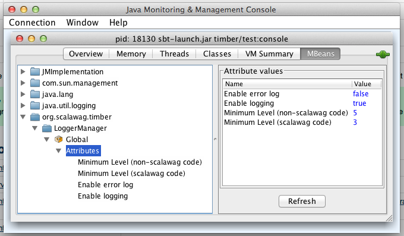

Logging... Scala-style.
This project is maintained by scalawag
Timber is a logging system for use in Scala applications. It is written in Scala and takes advantage of its unique language features. It's not a wrapper for an existing Java logging library.
Configuration is done through an internal DSL, allowing you to use the full power of Scala to configure your logging system.
LoggerManager.configure { IN =>
val console = stderr
IN :: level >= DEBUG :: console
IN :: logger.startsWith("com.example") :: level >= WARN:: console
}
It supports exposing key configuration parameters through JMX so that the logging system configuration can be modified easily and clearly at run-time.

It takes advantage of Scala's by-name parameters and function literals to provide lazy message evaluation. That prevents doing work that doesn't need to be done without requiring "isEnabled" conditionals.
log.debug("n = " + n)
log.debug { pw:PrintWriter =>
pw.print("Here's a multi-line log entry that")
pw.println("won't be built unless it's needed.")
traversable.foreach(pw.println)
}
It supports the slf4j interface so that it can be used by Java classes and by applications that are already using the slf4j API (or any API for which slf4j includes a bridge).
It supports logback appenders so you can keep using any custom appenders that you've already written.
It takes advantage of Scala Actors internally to minimize its impact on your application code's performance.